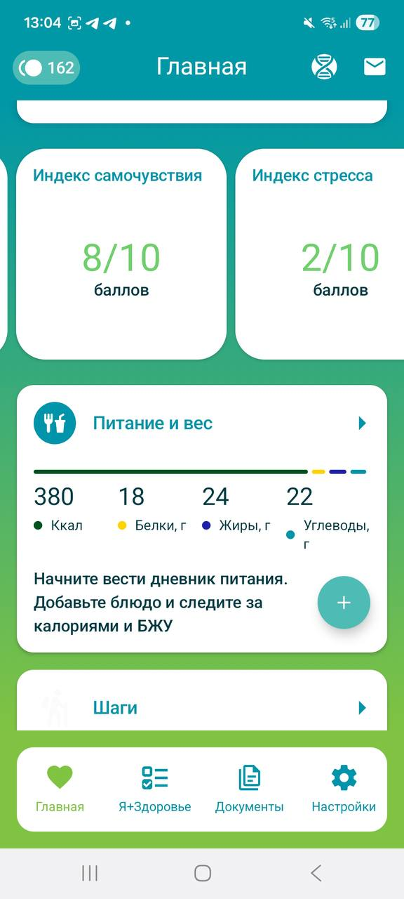
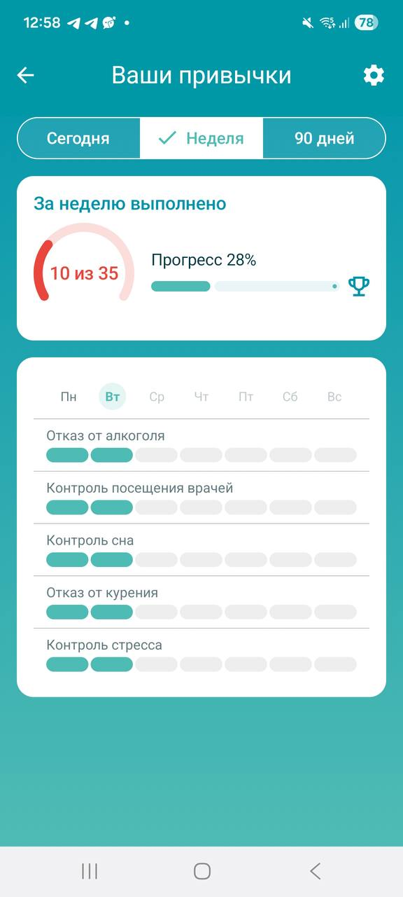
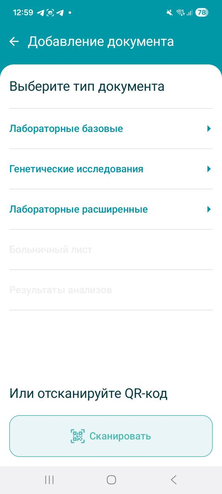

01 / ПИТАНИЕ
Дневник ведёт сам себя
Просто сфотографируйте еду
ИИ определит блюдо, рассчитает среднее КБЖУ и автоматически добавит запись в дневник.

Чтобы предупредить болезнь, сначала нужно заметить изменения за тысячей рутинных дел

С чего начать
Привычки, самочувствие, анализы и показатели организма — начните с малого.
Приложение объединит информацию и покажет первое представление о вашем состоянии.
Ведите дневник пищи и сна, отмечайте изменения состояния и фиксируйте важные события.
Со временем портрет становится точнее и помогает замечать изменения раньше.
Простота использования
01 / ПИТАНИЕ
Просто сфотографируйте еду
ИИ определит блюдо, рассчитает среднее КБЖУ и автоматически добавит запись в дневник.

02 / ПРИВЫЧКИ
Отмечайте привычки в касание
Выберите нужные один раз и отмечайте их каждый день. История сохранится автоматически и покажет прогресс за месяц.

03 / ДОКУМЕНТЫ
Загрузите их любым удобным способом
QR-код, фотография или PDF — приложение съест всё.

04 / СВЯЗЬ
Подключайте любимые устройства и сервисы
Приложение автоматически получает показатели из популярных приложений и устройств.

Интеграции
Если вы уже пользуетесь приложениями для здоровья или носимыми устройствами, просто подключите их к приложению в настройках.
Анонимность
Мы сделали всё от нас зависящее, чтобы обеспечить безопасность данных и не отвлекать вас от заботы о здоровье.
Решайте, какие данные хранить, передавать и использовать.
Для работы приложения необязательно раскрывать личность.
Приложение работает с обезличенными показателями здоровья.
От доступа к местоположению можно отказаться.
FAQ
Короткие ответы: с чего начать, что вести вручную, куда положить анализы и что не является диагнозом.
Начните с одного понятного действия: отметьте самочувствие сегодня, откройте паспорт здоровья или добавьте документ. На лендинге выберите задачу, затем перейдите в нужный раздел приложения.
Можно отмечать самочувствие, вести привычки и дневник питания, заполнять анкеты и показатели здоровья, а также добавлять доступные типы документов.
В разделе «Настройки → Мои устройства» доступен Health Connect. Точные шаги для Google Fit, Samsung Health и Apple Health будут опубликованы в документации.
Нет. «Здоровье» помогает вести данные, смотреть динамику и готовить вопросы. Оно не ставит диагноз, не назначает лечение и не заменяет консультацию специалиста.
Это ориентиры по нескольким направлениям на основе ваших данных. Они помогают увидеть зоны внимания, но не являются диагнозом или подтверждением заболевания.
Во вкладке «Документы» собраны приёмы, лабораторные и генетические исследования, другие материалы и запросы. Доступные документы можно добавить через «+» или по QR-коду.
Документация
В документации — пошаговые инструкции по основным разделам приложения:
Начните с интересующей задачи и возвращайтесь к инструкции, когда понадобится.